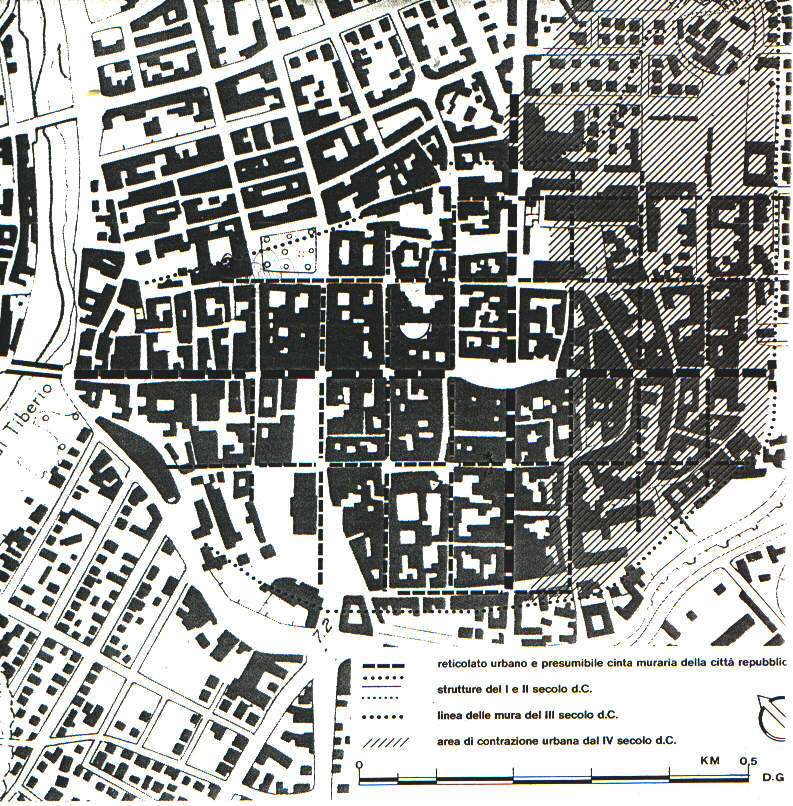

LE STRADE
Le strade che collegavano Rimini con le più importanti città d'Italia erano:
VIA EMILIA: che collegava la città con Piacenza;
VIA POPILIA: che arrivava fino allo stretto di Messina;
VIA FLAMINIA: diretta verso Roma.
La tecnica di esecuzione delle strade era accuratissima, e questo spiega la loro ottima conservazione. Si cominciava col delimitare tra due piccoli fossati paralleli lo spazio della carreggiata.
Per le strade militari questa variava tra i 4 e i 5 metri, in modo da permettere la marcia dei veicoli nei due sensi; mentre la via Appia era larga non meno di 10 metri.
Si scavava quindi in profondità, tendenzialmente fino alla roccia. Si consolidava poi il fondo e su una preparazione di sabbia e calce, si mettevano quattro strati sovrapposti in questo ordine:
una massicciata di pietre di grosse dimensioni (statumen);
uno strato di pietre più piccole con cocciame e calce (rudus);
sabbia e pietrisco (nucleus);
lastre di selce levigate e fatte combaciare con molta cura (summum dorsum).
La superfice della careggiata era leggermente convessa per facilitare lo scolo delle acque. Due marciapiedi la fiancheggiavano. Le strade minori erano ricoperte di ghiaia o di terra battuta.
